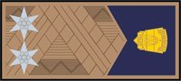
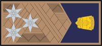
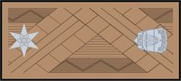

Rendőrségi rendszer
Egy fő resource modulokkal (körözés, üldözés, rendőr AI, egységek, MDC, intézkedések, jelentések, adatbázis), mellette egy nyilvános weboldal és a rendőr munka. A szerver számol, a kliens csak rajzol, és csak akkor, amikor kell.
Áttekintés
Resource-bontás
Egyetértek a kevés resource-szal. Egy resource-on belül minden modul ugyanabban a Lua állapotban fut, így a modulok közti hívás sima függvényhívás: nincs szerializálás, nincs export overhead, és nem kell félni attól, hogy egy másik resource éppen újraindul. Három resource lesz.
| Resource | Mit tartalmaz | Miért külön |
|---|---|---|
[police]/police_system | Minden modul: core, db, rights, wanted, warrants, chase, ai, units, mdc, hud, radio, query, plates, stop, arrest, events, reports, records, history, tow, medical, btk, gov, web (adat). | Fő resource. |
[police]/police_web | Nyilvános oldal: hogyan lehet rendőr, rangok, statisztika, bírságtábla. web_api alapon, in-game ui_browser oldal és külső URL is. | A HTTP oldalak újraindítása ne állítsa le a szolgálatot. Egyetlen cache-elt exportot hív. |
[work]/work_police | work_core regisztráció, duty markerek, járműmarkerek, rangok mint munkaszintek, rendőr jog adása. | A meglévő munka-mintát követi (work_ems, work_bloodtransport). |
Mappaszerkezet
police_system/
meta.xml locals.lua README.md
shared/ config.lua (POLICE.*), reasons.lua (körözési + elfogató okok), radio.lua (üzenet id-k),
btk.json (bírság alapértékek), names.lua (NPC nevek), skins.lua (skin → nem, offline generált)
core/ server/registry.lua, server/bus.lua, client/bus.lua, client/layers.lua (render ütemező)
modules/
db/ server: schema.lua, pool.lua, db.lua
rights/ server + client
wanted/ server: wanted.lua, heat.lua, evasion.lua · client: stars.lua (ui_core villogás, keresési kör)
warrants/ server
chase/ server: chase.lua, prediction.lua
ai/ server: units.lua, tactics.lua, sirens.lua, budget.lua
units/ server: units.lua, shifts.lua, pay.lua
mdc/ server: api.lua, feed.lua · client: mdc.lua, pages/*.lua, widgets.lua (dx, render target)
hud/ client: mini.lua, fkeys.lua
radio/ server + client
query/ server + client: window.lua
plates/ client
stop/ server + client
arrest/ server + client: cuffs.lua (csont-póz), escort.lua
events/ server: dispatch.lua, log.lua
reports/ server: drafts.lua, templates/<lang>.lua
records/ server
history/ server: npc.lua, register.lua
tow/ server
medical/ server
btk/ server: btk.lua (json + kormány felülírás)
gov/ server: GOV.module regisztráció · web/js/police.js (a /gov oldal scriptje)
web/ server: publicStats cachePOL.module("wanted", {...}) regisztrál, a modulok egymás tábláját hívják (POL.wanted.add(...)), az eseményekre POL.on("unit.signedOff", fn) iratkoznak fel. MTA eseményt csak a kliens–szerver határon és a külső resource-ok felé használunk.Külső API
-- szerver exportok (police_system)
addWanted(player, reasonId, level?) -- level = minimum szint, nem +1; okot mindig hozzáad
getWanted(player) -- level, {reasons}, phase ("active"|"evading"|"paused")
clearWanted(player, why) -- teljes törlés (admin, script); nincs -1
hasPoliceRight(player) / setPoliceRight(player, bool) -- work_police hívja
isPoliceVehicle(veh) -- modell + 598-nál hu_pd paintjob
isElementCuffed(el)
radioCommand(player, messageId, args) -- a későbbi hangalapú rádió belépési pontja
getPublicStats() -- police_web, 60 s cache
-- események (root, source = police_system resourceRoot, kivéve ha jelölve)
onPlayerWantedChange(player, new, old, reasons)
onPlayerWantedEvaded(player, level)
onPoliceArrest(suspect, officer|false, kind) -- kind: "player"|"ai"
onPoliceFineIssued(subjectInfo, btkId, amount, officer)Optimalizáció és adatforgalom
Render szabályok
- Egy kliens oldali réteg-ütemező (
core/client/layers.lua): minden UI elem egy réteg, ami csak akkor kerül be azonClientRender-be, amikor aktív. Ha egy réteg sem aktív, maga a handler is lekapcsol. - MDC: render targetbe rajzol, csak változáskor (adat, hover, gépelés) rajzolja újra. Frame-enként egy
dxDrawImage. - Mini kijelző, lekérdezés ablak, rádió: szintén render target, csak állapotváltáskor frissül.
- Rendszám UI: 300 ms-os időzítő gyűjti a közeli járműveket (csak szolgálatban), a réteg csak akkor fut, ha van mit rajzolni.
- Bilincs csont-póz:
onClientPedsProcessedcsak addig, amíg van bilincselt elem streamelve. - A ui_core csillag renderer ma állandóan fut. Átírom: csak körözés közben kapcsol be (lásd Hiányosságok).
- Indításkor az aktuális állapotot olvassuk be (szolgálat, bilincs, megállítás), nem csak a változás-eseményekre várunk.
Szerver számol
- Körözés, eszkaláció, lerázás, AI döntések, útvonal-előrejelzés, fizetés, jelentés-vázlat: mind szerveren.
- Ütemezés: a wanted/chase tick 1 Hz, csak körözött játékosokra. AI taktika 2 Hz, csak aktív üldözésre. Semmi nem fut, ha nincs körözés.
- MDC adat: kérés–válasz, lapozva (25 sor), szerver oldali cache-sel. Az áttekintés csak a nyitott MDC-ket kapja, 2 s-onként, és csak ha változott (delta).
- DB: aszinkron
MYSQL.query, id pool, a napló JSON-sorokban CONCAT-tal (nincs read-modify-write).
Element data terv
MTA 1.6 subscribe sync módot használunk ott, ahol csak néhány játékosnak kell az adat (addElementDataSubscriber). Ami mindenkinek kell, az ritkán változik.
| Kulcs | Elem | Sync | Ki kapja | Mikor változik |
|---|---|---|---|---|
pol.right | player | subscribe | csak a játékos maga | szolgálat eleje / vége |
work.rank | player | broadcast | mindenki (nametag) | duty kezdés, szintlépés (work_core állítja) |
pol.cuffed | player, ped | broadcast | mindenki (ikon, póz, séta) | bilincselés / levétel |
pol.escort | player, ped | broadcast | mindenki (követés animációja) | kísérés kezdete / vége |
pol.unit | vehicle | subscribe | szolgálatban lévő rendőrök | egység be/ki |
pol.stop | ped, vehicle, player | subscribe | az intézkedő egység tagjai | megállítás eleje / vége |
| wanted szint | player | natív | csak a játékos maga (GTA) | szintváltás. Másoknak nem kell, az MDC a szervertől kéri. |
ai_traffic.chase | AI vehicle | broadcast | a syncer kliens kormányoz | cél vagy mód váltás (ritka) |
Ami nem megy element datába: státuszok, MDC listák, üldözés pozíciók, lekérdezés eredmény. Ezek célzott triggerClientEvent-tel mennek csak az érintett egységnek.
Rendőr jog
POLICE.REQUIRE_POLICE_RIGHT = falsea configban (tesztelés). Ilyenkor mindenki rendőrnek számít, ugyanúgy, mint abt_coreREQUIRE_RIGHTmintában.- A jog a
pol.rightelemadat (subscribe, csak a játékos kapja). A szerver az igazság:Rights.has(player). - A
work_policeduty kezdéskor adja, végén veszi el (setPoliceRight), és police_system újraindulása után újra kiosztja (onPoliceSystemStart). - Jog nélkül semmi nem jelenik meg: nincs MDC, nincs J, F4–F7, C, E/Shift intézkedés, rendszám UI, és nincs figyelmeztető üzenet sem. A kliens a billentyűket csak joggal köti be.
isPoliceVehicle(veh): 596, 599, (597 kommentben), és 598 csakpaintjob:custom == "hu_pd"esetén, mert a 598-at a mentős orvosi autó is használja más paintjobbal. A 432 tank csak AI.
Rendőrségi járművek
| Modell | Név | Beállítás | Kinek | AI használat |
|---|---|---|---|---|
| 596 | Ford Crown Victoria | ELS code3_z3 | work_police, AI | alap járőr, városban |
| 598 | Skoda Octavia MK3 | paintjob hu_pd, ELS extra 1 (elsExtra) | work_police, AI | alap járőr, városban |
| 597 | GTA5 rendőrautó | csak komment a configban | később | később |
| 599 | Police Ranger (NYPD) | ELS rumbler | work_police, AI | vidéken, terepen |
| 432 | Rhino tank | nincs ELS | csak AI | csak 5–6. szint |
POLICE.VEHICLES = {
[596] = { name = "Ford Crown Victoria", ai = { weight = 5, zones = { "city" } } },
[598] = { name = "Skoda Octavia MK3", paintjob = "hu_pd", elsExtra = 1, ai = { weight = 5, zones = { "city" } } },
-- [597] = { name = "GTA5 police car" }, -- később
[599] = { name = "Police Ranger", ai = { weight = 6, zones = { "rural" } } },
[432] = { name = "Rhino", aiOnly = true, ai = { minLevel = 5 } },
}work_police és rangok
[work]/work_police
registerWork("police", ...)skinekkel, duty markerekkel (LSPD, SFPD, LVPD; pozíciók MCP-vel bemérve), járműmarkerekkel (garázsok).- Járművek a work_core
tuning/elsExtra/sirenType/paintjobmezőivel; rendszámplatePrefixnélkül, egyedi számmal. - Duty kezdés:
police_system:setPoliceRight(player, true), vége: false. Nincs más logikája. - Szintek = rangok:
levels = { maxLevel = 15, names = {...} }. XP a fizetéssel együtt jár (giveWorkXp), a jelentések alapján. - Tutorial most nincs, a
WorkModules.registerhookot meghagyom rá.
v_nametags: moduláris rangjelzés
- work_core új opciója:
registerWork(id, { rankBadges = true }). Ilyenkor duty alatt beállítja awork.rank= szint elemadatot (broadcast, ritkán változik). - v_nametags: ha van
img/ranks/<workId>/<szint>.png, a work kártyától jobbra kirajzolja. A mentősöknél csak egy mappa és a flag kell. - A képeket előre, offline forgatom el 90°-kal jobbra és kicsinyítem (128×58 PNG), így futás közben nincs forgatás és kisebb a letöltés. A 3 névtelen fájlt a csillagok alapján azonosítottam (Hadnagy, Főhadnagy, Százados).

Alezredesszint 11
Ezredesszint 12
Dandártábornokszint 13A képek már 90°-kal jobbra forgatva, a v_nametags img/police_ranks mappájából.
Adatbázis modul
Minden tábla pol_ előtagú, a séma a modules/db/schema.lua-ban és a repo main.sql-ben. A modul indításkor CREATE TABLE IF NOT EXISTS, és megvárja a mysql:connected-et.
| Tábla | Fő oszlopok | Megjegyzés |
|---|---|---|
pol_citizens | id, kind (player/npc), account_name, name, gender, birth_date, skin, flags JSON (jogosítvány, BAC/drog esély), generated, created_at, last_seen | Játékos: account_name egyedi. NPC: első intézkedéskor. |
pol_vehicles | id, kind, owner_citizen_id, ownveh_id, plate (index), model, color, flags JSON (forgalmi, műszaki, lopott), created_at | Rendszám szerint keresünk. |
pol_records | id, type (fine/warning), btk_id, amount, paid, citizen_id, vehicle_id, officer, unit, shift_id, report_id, created_at | Bírságok és figyelmeztetések. |
pol_warrants | id, citizen_id, reasons JSON, description, lang, status (active/served/revoked), issued_by, updated_by, created_at, updated_at | Elfogató parancsok. |
pol_reports | id, shift_id, incident_id, type, lang, author, unit, title, body, subjects JSON, status (draft/submitted), created_at, submitted_at | Jelentések. |
pol_shifts | id, callsign, unit_type, leader, members (JSON sorok), server, started_at, ended_at, events (JSON sorok), pay JSON, pay_pending | Egységek szolgálatai, napló. |
pol_stats | day, key, value | Napi aggregált számok a weboldalnak. |
Id pool
- Minden táblában szerver instance-enként 2 placeholder sor (
status = 'pool'vagygenerated = -1,server= instance id), a med_erm mintája szerint. - Új sor = a legkisebb id-jű saját pool sor UPDATE-je, utána egy új pool sor aszinkron INSERT-je. Így az írás nem blokkol, és az id-k nem ugranak.
- Minden olvasó kiszűri a pool sorokat (közös
DB.notPoolfeltétel).
Írási minták
- Napló:
pol_shifts.eventsJSON sorok, 30 s-onként kötegelve CONCAT-tal. - Indítási regisztráció: egy-egy
INSERT … SELECT … WHERE NOT EXISTSazaccountsésvehiclestáblából, nem soronként. Ez kivétel a poolból (sorrendben írja az id-ket). - Két szerver közös DB-n: callsign ütközés és nyitott szolgálat a
serveroszloppal, mint a med_shifts-nél.
Körözés (wanted)
A GTA beépített szintje (0–6) a forrás: setPlayerWantedLevel a szerveren. Mellette a modul tárolja az okokat, a „heat” pontot és a fázist. Semmi nem mentődik: lecsatlakozáskor törlődik.
Hozzáadás külső scriptből
exports.police_system:addWanted(player, "shop_robbery") -- az ok alap szintje
exports.police_system:addWanted(player, "vehicle_theft", 1)
-- ha a szint már >= a kért szint: csak az ok kerül fel, a szint nem nő- Az okok előre definiáltak (
shared/reasons.lua): id, alap szint, BTK kapcsolat, szöveg (v_locals). - Csak dimenzió 0-ban működik. Job meccsben, gang war editorban, tutorialban a hívás
false, "dimension". - Szolgálatban lévő rendőr nem kap körözést intézkedés közbeni cselekményre.
- Az okok az MDC Civil oldalán és a Körözések listában látszanak, amíg a körözés tart.
Eszkaláció
- 1 → 2: egy egység (AI vagy játékos) villogóval követi 80 m-en belül, a gyanúsított 15 s-ig mozgásban marad (jármű > 2 m/s vagy futás). Rendőrautó szándékos döngölése is 2.
- 2 → 3: bármilyen sebzés rendőrön, rendőrautón (AI pedek, AI járművek, szolgálatos játékosok). Lövés rendőr közelébe (+heat, de még nem 3).
- 3 → 6: heat pont küszöbök. Rendőr sebzése +25, megölése +100, rendőrautó megsemmisítése +60, lövés rendőr közelében +5. 4: 150, 5: 350, 6: 700 (configban).
- Feladás: ha egy egység 15 m-en belül van és a gyanúsított áll, „Hold E to surrender” felirat. Feladás után nincs további emelés, az egység letartóztat.
Lerázás
| Szint | Tartási idő | Keresési kör | XP | Megjegyzés |
|---|---|---|---|---|
| 1 | 20 s | 200 m | 100 | Lerázás fázis: nincs AI jármű 180 m-en, nincs AI vagy játékos rendőr gyalog 80 m-en belül. A csillagok villognak (ui_core setWantedBlinking), a v_radar kört mutat az utolsó ismert helyen (addCircleArea, csak az egységeknek és a gyanúsítottnak). Ha valaki újra meglátja, a villogás leáll és az idő nulláról indul. |
| 2 | 30 s | 250 m | 250 | |
| 3 | 45 s | 300 m | 500 | |
| 4 | 60 s | 350 m | 900 | |
| 5 | 90 s | 400 m | 1500 | |
| 6 | 120 s | 450 m | 2500 |
- A „lát” itt távolságot jelent (a szerveren nincs ütközés-teszt), a GTA kereső-köréhez hasonlóan. Javaslat, configban állítható.
- Lerázás fázisban az AI az utolsó ismert hely körül keres, nem vág elé és nem hív új egységet előre.
- Interior vagy nem-0 dimenzió: a lerázás nem halad, az AI nem jön be; kijövetelkor folytatódik. Ha valaki interiorban kap körözést, AI csak kijövetel után indul.
- Lerázás után
giveXpa v_levelsys-ben. Farmolás ellen: csak akkor jár XP, ha az üldözés legalább 60 s-ig tartott, és 10 perces cooldown van rá.
Elfogató parancs
- Független a GTA körözéstől, tartós:
pol_warrantstábla. Játékosra és NPC-re is szólhat. - Előre definiált okok: a BTK bűncselekményei és közrendi tételei, plusz
unpaid_fines,escape_custody,evading_arrest. Több ok választható. - Rövid leírás, saját nyelvvel (alap: a kiadó játékos nyelve, a v_locals nyelvlistából átállítható). Fordítás nincs, később AI.
- Kiadás, módosítás, visszavonás az MDC Warrants oldalán. Minden módosítás a kiadó nevével és időpontjával naplózva.
- Igazoltatáskor és lekérdezéskor piros WARRANT jelzés a lekérdezés ablakban és a civil adatlapon.
- Végrehajtás: letartóztatás és átadás után
servedstátuszra vált.
Üldözés modul
Az üldözés modul az egyetlen, ami AI rendőrt kérhet. Másodpercenként végignézi a körözött játékosokat, és mindegyikhez egy igényt számol. Az AI modul az igényt teljesíti: ő dönti el, hol jelenik meg az egység és pontosan mit csinál.
Üldözés objektum
- Egy körözött játékosra (vagy menekülő NPC-re) egy üldözés. Mezők: id, suspect, level, phase, startedAt, lastSeen, units (AI + játékos egységek), log.
- Játékos indítja: F4 (Pursuit) vagy rádió
STATUS_PURSUITegy kijelölt célpontra (a megállított vagy a rendőrautó előtti jármű). Ha a cél menekül, megkapja a „nem áll meg” eszkalációt. - Csatlakozás: az MDC Pursuits oldalán Join. A csatlakozott egység státusza Pursuit, a gyanúsított blipje csak nekik látszik (
createBlipAttachedTo+setElementVisibleTo), lerázás fázisban helyette a keresési kör. - Ha játékos rendőrök is üldöznek, az AI igény csökken (egy játékos egység = egy AI autó).
Útvonal-előrejelzés (2. szinttől)
- Ha a gyanúsítottnak van
gpsDestinationwaypointja, a navmesh útvonala; különben a navmeshgetNearestLane+ előre-séta a sávgráfon a haladási irányba (300–500 m). - A sávok útvonala 2 s-onként frissül, és csak ha a gyanúsított 40 m-nél többet tért el.
- Ebből választ az AI elévágó pontot. Lerázás fázisban nincs előrejelzés.
| Szint | Autók | Tank | Taktika | Fegyver, pontosság |
|---|---|---|---|---|
| 1 | 1 | 0 | követés, felszólítás, megállás után gyalogos letartóztatás | nincs lövés |
| 2 | 2 | 0 | követés, beszorítás, elévágás | pisztoly, 0,25 |
| 3 | 3 | 0 | + PIT manőver (helikopter később) | shotgun / SMG, 0,35 |
| 4 | 4 | 0 | + döngölés, útzár 2 autóval az előre jelzett úton | SMG, 0,45 |
| 5 | 4 | 1 | + tank | M4, 0,55 |
| 6 | 5 | 2 | + 2 tank | M4, 0,65 |
Globális korlát: POLICE.AI.MAX_VEHICLES = 14, MAX_TANKS = 3. Egymáshoz 300 m-en belüli gyanúsítottak osztoznak az egységeken. Minden szám config.
Rendőr AI (police_system / ai modul)
Megjelenés és eltűnés
- Spawn csak úton, 180–400 m-re, olyan ponton, amit egy játékos kamerája sem lát (ai_land_traffic kamera-jelentések, új export).
- Eltűnés csak akkor, ha egy kamera sem látja és 150 m-nél messzebb van minden játékostól. Addig visszavonul: kikapcsolja a szirénát és normál forgalomként hajt tovább.
- Zóna szerinti modell: városban 596/598 (hu_pd, extra 1), vidéken 599. Tank csak 5–6.
- Csak dimenzió 0, interior 0 (az ai_land_traffic scriptelt járművei csak ott szinkronizálnak).
Vezetés
- Távol (> 150 m vagy nem látott): a forgalom szimulációban fut, scriptelt pursuit módban, sávokon. Olcsó, kevés csomag.
- Közel: átadás fizikára, a syncer kliens kormányozza (chase motor, a v_jobmanager küldetés-üldözés általánosítva). Itt van követés, beszorítás, PIT, döngölés.
- Távolodáskor és ha senki nem látja, visszaveszi a szimuláció.
- A villogó és sziréna végig megy (v_els). A forgalom már most kitér a
mkjStateautók elől.
Gyalogos rendőrök
- Ha a gyanúsított megáll vagy gyalog van 40 m-en belül, a rendőrök kiszállnak (ai_peds
policeviselkedés). - 1. szint: fegyver nélkül odamennek, 2 m-en belül 3 s álldogálás után letartóztatás („Busted”).
- 2. szinttől: fegyvert fognak, a szint szerinti pontossággal lőnek.
- Ha a gyanúsított elhajt, visszaszállnak és folytatják.
Sziréna
- Az AI 6–15 s véletlen időközönként vált a sziréna típus hangjai között (
setElsSiren(veh, true, index)), kereszteződés előtt néha rövid kürt. - Lerázás fázisban: csak villogó, sziréna nincs. Visszavonuláskor minden ki.
AI resource-ok bővítése
A bővítések általánosak, nem rendőr-specifikusak: a többi rendszer (küldetések, biz, buszok) is használhatja őket.
ai_land_traffic
| Új export / funkció | Mire kell | Megvalósítás |
|---|---|---|
findHiddenRoadSpawn(x, y, z, {minDist, maxDist, ahead, heading, profile}) | AI rendőr, vontató, mentő spawn | Sávpontok a gyűrűben, Views.anySees szűrés (már létező kamera-jelentés), irány a megadott pont felé. |
isElementSeenByPlayers(el) | eltüntetés ellenőrzése | Views.anySees a pozícióra. |
setScriptedDespawnUnseen(veh, {minDist}) | vontató, mentő, visszavonuló rendőr | Az utolsó cél után nem 3 perc, hanem az első pillanat, amikor senki nem látja. |
setScriptedChase(veh, target, {mode, aggression, maxSpeed}) | üldözés közelről | Új kliens client/chase.lua (a v_jobmanager jobs.chase kormányzásából): módok follow, box, ram, pit, block. Közel fizika + syncer, távol vissza a szimulációba. |
pullOverTrafficVehicle(veh, byVeh) / releaseTrafficHold(veh) | közúti ellenőrzés | Az ágens a padkára húzódik (meglévő ELS-kitérés logika) és tartva marad: nincs culling, nincs release, a sofőr kiszállhat és visszaszállhat. |
parkScriptedVehicle(veh, x, y, z, rot) | útzár | Kivétel a szimulációból, keresztbe állítva, fagyasztva. |
setTrafficVehicleFlee(veh, from) | menekülő NPC (később) | Pursuit fordítva: a célponttól távolodó útvonal, gyorsabb profil. |
profil pursuit | AI rendőr | Piroson áthajt (lassítva), 1,4× sebesség, a forgalom kitér. |
ai_peds
| Új elem | Mire kell |
|---|---|
viselkedés police (args: suspect, level, armed, accuracy) | gyalogos rendőr: odamegy, letartóztat, vagy szint szerint lő; visszaszáll a kocsiba. |
viselkedés detained | megállított gyalogos: áll, a rendőr felé fordul. |
viselkedés cuffed + task follow(leader, dist) | bilincselt NPC, kísérés. |
exportok aiPedEnterVehicle(ped, veh, seat), aiPedExitVehicle(ped) | kiszállítás, visszaszállás, rendőrautóba ültetés (a motor már tudja, csak nincs kivezetve). |
esemény onAIPedDamaged(ped, attacker, weapon, loss) | heat pont: a meglévő retaliate érzékelés eseményként. |
viselkedés patient | sérült NPC, amit az AI mentő elvisz. |
Units manager
Szabályok
- Bejelentkezés csak rendőrautóban, az MDC-n. Amíg az egység nincs bejelentkezve, az MDC csak a bejelentkezés ablakot mutatja.
- Típusok: Adam (A-) kétszemélyes, Lincoln (L-) egyszemélyes. Szám 1–99.
- Ütközés: a szám típustól függetlenül foglalt (A-10 és L-10 nem lehet egyszerre), az összes szerver instance nyitott szolgálatai között is.
- Egy játékos egy egységben. Tag menet közben is felvehető (meghívó értesítés, elfogadás).
- A vezető kilép a szerverről: az egység megszűnik. Tag lép ki: az egység marad.
- Kijelentkezés csak akkor, ha minden lezárt intézkedés jelentése be van adva.
Fizetés zárásakor
- A beadott jelentések típusa szerint (táblázat a Jelentéseknél). Minden tag kap, a saját részvétele szerint.
- Kifizetés a work_core
payWork-kel, így megy rá a jövedelemadó és a heti szorzó. A paramétereket a gov_worksregisterWage-dzsel regisztráljuk, a kifizető alapból az államkincstár. - Ha a vezető lecsatlakozik be nem adott jelentésekkel, a fizetés
pay_pending-be kerül, és a következő bejelentkezésnél, a jelentések beadása után fizetünk.
MDC, rendőrségi számítógép
J gomb rendőrautóban, csak joggal. A képernyő közepén 80% (szélesség és magasság). Felső sávban a menü. Enyhe navy alap, élénk státuszszínek, modern rendőrségi CAD/MDC elrendezés. A felület angol, a szövegek v_locals kulcsokon.
Units6
| Unit | Officers | Status | Area |
|---|---|---|---|
| A-12 | DrAndrew, Kovi | AVAILABLE | Pershing Sq. |
| L-4 | Sanyi | PURSUIT | Idlewood |
| A-31 | Peti, Bence | RESPONDING | Ganton |
| L-7 | Zoli | BUSY · TRAFFIC STOP | Market |
| A-2 | Gabi, Robi | AVAILABLE | Downtown SF |
Active pursuit04:12
| Laptop112 | ★★★ | Sultan · 61-AB-422 |
| L-4 + 2 AI units · Idlewood → East LS · Join | ||
Wanted3
| Laptop112 | ★★★ | shots at police |
| Mike_V | ★ | shop robbery |
| Kriszta | ★★ | failure to stop |
Calls0
| Date | Type | Offence | Amount | Officer |
|---|---|---|---|---|
| 2026-10-28 19:12 | FINE | Running a red light | €400 | L-7 Zoli |
| 2026-10-21 14:40 | WARNING | Seat belt not worn | – | SAPD Records |
| 2026-10-02 22:05 | WARRANT | Robbery · "Armed hold-up at 24/7 Idlewood" | EN | A-3 Peti |
| Oldal | Tartalom |
|---|---|
| Overview | Jelentés-figyelmeztetés, számok, egységek státusszal, aktív üldözések, körözések, bejelentések. |
| Calls | Bejelentések. Most üres állapot, később a ui_phone 112 „pd” vonala és az automatikus hívások ide jönnek. |
| Pursuits | Aktív üldözések: gyanúsított, szint, jármű, egységek, időtartam, irány. Join gomb. |
| Wanted | Ideiglenes körözések (játékosok), okokkal. Megszűnéskor eltűnnek. |
| Warrants | Elfogató parancsok listája, kiadás (okok jelölőnégyzettel, leírás, nyelv), módosítás, visszavonás. |
| Citizens / Vehicles | Lista, Player/NPC szűrő, keresés, adatlap korábbi jelentésekkel, bírságokkal, figyelmeztetésekkel (dátum + név). |
| Reports | Saját vázlatok (kötelezők felül), beadottak, egységé. Szerkesztő a nyelv választóval. |
| Penal code | A BTK tételei aktuális összeggel (gyors segítség intézkedés közben). |
Bejelentkezés ablak (kisebb)
Kovi · invited, waiting
Technika
- Dx, saját widgetek (gomb, lista, tabok, szövegmező, többsoros szerkesztő a v_news mezőjéből), render targetben.
- Adat lapozva kérésre (
pol:mdc:call→ válasz). Az Overview feed csak nyitott MDC-nek megy. - Skoda 598: csak
hu_pdpaintjobbal nyílik. - Az MDC nyitva tartása alatt a mozgás vezérlők zárva (ui_core
toggleMoveControls), a jármű áll.
Mini kijelző és F gombok
Szolgálat közben a jobb alsó sarokban: egységszám, státusz, alatta a színkódolt F gombok. Tőle balra jelenik meg a lekérdezés ablak.
| Gomb | Státusz | Rádió id | Szín |
|---|---|---|---|
| F4 | Pursuit / Üldözésben | STATUS_PURSUIT | piros |
| F5 | Available / Elérhető | STATUS_AVAILABLE | zöld |
| F6 | Responding / Vonulás | STATUS_RESPONDING | sárga |
| F7 | Busy / Elfoglalt (helyszínen, intézkedik, közúti ellenőrzés) | STATUS_BUSY | narancs |
A státusz egyelőre csak kézzel állítható (F gomb, rádió, MDC). Kivétel: a Busy alcímke (pl. Traffic stop) automatikusan kerül fel megállításkor, de a státuszt nem változtatja.
Rádió
REQUEST_BACKUPREQUEST_AMBULANCEREQUEST_TOWSzolgálatban C nyitja, a képernyő bal oldalán. Bal/jobb nyíl kategória, fel/le menüpont, Enter küld, C vagy Backspace zár. Nyitva a nyilak és a C nem mennek a GTA-nak (guggolás, kanyarodás).
Minden üzenetnek van név id-je. A szerver Radio.handle(player, id, args) függvénye az egyetlen belépési pont; a későbbi hang kliens ugyanezt hívja a radioCommand exporton.
| Kategória | Üzenet | Id | Feltétel, hatás |
|---|---|---|---|
| Status | Available | STATUS_AVAILABLE | |
| Responding | STATUS_RESPONDING | ||
| Busy | STATUS_BUSY | ||
| Pursuit | STATUS_PURSUIT | kijelölt célponttal üldözést indít | |
| Code 4 | CODE_4 | lezárja az aktuális intézkedést (jelentés vázlat készül), státusz automatikusan Available | |
| Backup & services | Police backup | REQUEST_BACKUP | csak ha van másik szolgálatos egység; a legközelebbi elérhető kapja (MDC értesítés, waypoint, Responding) |
| Ambulance | REQUEST_AMBULANCE | van szolgálatos mentős: med_erm feladat rövid leírással; nincs: AI mentő | |
| Tow truck | REQUEST_TOW | legközelebbi üres jármű; rendőrautónál megerősítő temp menü; utána nem lehet beszállni | |
| Lookup | Check person | QUERY_PERSON | legközelebbi ped/játékos |
| Check vehicle | QUERY_VEHICLE | legközelebbi jármű |
Lekérdezés modul
- Rádió (
QUERY_PERSON,QUERY_VEHICLE) és a stop temp menü (Personal details, Vehicle details) hívja. - Szerveren: célpont kiválasztás és ellenőrzés (távolság), NPC-nél a History modul generál, ha még nincs adat, majd egy kompakt eredmény az egység tagjainak.
- Kliensen a mini kijelzőtől balra (lásd fent). A jelzések (WARRANT, WANTED, Suspended, Stolen) színkódolva. Elrejtés: a spec szerint Space, de vezetés közben ez a kézifék; javaslatom Backspace (lásd Döntések).
- Az ablak 30 s után magától eltűnik, a lekérdezés az MDC-ben visszanézhető (naplóban is).
Rendszám UI
- Joggal (szolgálatban) minden jármű felett kis dx címke 25 m-en belül, legfeljebb 8 legközelebbi, takarás ellenőrzéssel.
- Csak kliens:
getVehiclePlateText, nincs szerver adat. 300 ms-os gyűjtés, a réteg csak akkor rajzol, ha van jármű a listában. - A rendszám az MDC keresőben kereshető. Élő NPC járműnél a szerver a világban megkeresi a rendszámot, és a History modul ekkor regisztrálja.
Stop the ped
Gyalogos és játékos
- E nyomva tartása (0,8 s) egy előtted lévő gyalogos vagy játékos felé, 4 m-en belül.
- NPC: ai_peds
detained, megáll és feléd fordul. History modul lefut. - Játékos: értesítést kap („You were stopped by the police”). Ha 15 m-nél messzebb megy, a megállítás interact objektje eltűnik (naplózva).
- Egy ui_interactobject menü jelenik meg a megállított felett (csak az egység tagjainak), ami a ui_inac temp menüt nyitja.
- Blip (
createBlipAttachedTo), csak az egység tagjai látják.
Jármű
- Bal Shift egyszer: a rendőrautó előtti jármű (25 m, ±12° kúp, a kliens választ, a szerver ellenőriz). Újra megnyomva törli a megállítást.
- v_els: ha a sziréna nem szólt, villogó be, sziréna 0,5 s-ra be majd ki, a villogó marad. Ha a sziréna már szólt, ahhoz nem nyúlunk.
- AI jármű:
pullOverTrafficVehicle, félreáll és tartva marad. Játékos: értesítés „Pull over”, ha 20 s alatt nem áll meg és tovább halad, „nem áll meg” eszkaláció (0-ról 1, 1-ről 2). - A Busy alcímke „Traffic stop” lesz a mini kijelzőn és az MDC-n.
- Alkohol és drog teszt: NPC-nél a History által generált eredmény (pl. 0,62 ‰). Játékosnál most mindig negatív, amíg nincs ital/drog rendszer; egy
pol.bac/pol.drugAPI-t hagyok rá. - Bírság és figyelmeztetés:
pol_recordssor, napló, NPC-nél csak nyilvántartás (lásd Döntések), játékosnál könyvelés. - Release: a jármű folytatja az útját (
releaseTrafficHold), az NPC továbbmegy. Ez egyben Code 4 az intézkedésre.
Arrest manager
Bilincs
- Letartóztatás menüpont (stop menü vagy interact). Játékos gyanúsítottnál: gyalog, 1,5 m-en belül, áll vagy feladta magát; 2 s bilincselés, ha közben 2 m-nél messzebb megy, sikertelen.
pol.cuffed= true. Póz: kéz hátul, kliens oldalisetElementBoneRotationcsak a streamelt bilincseltekre.- Játékos: csak séta (sprint, ugrás, tűz, fegyverváltás kikapcsolva), v_nametags bilincs ikon a név felett. Ped: bilincs ikon a fej felett.
- Levétel és elengedés: menüből, naplózva. Halál = automatikus levétel.
Kísérés, jármű, átadás
- Kísérés: NPC
followtask; játékosnál a saját kliense lépteti a rendőr után (pol.escort), nem attach (az rángat). - Járműbe: rendőrautó hátsó ajtaja mellett „Place in vehicle”. Játékos maga is beszállhat G-vel (utasként), kiszállni nem tud (
enter_exittiltva,onVehicleStartExitcancel). „Take out” a rendőrnek. - Átadás: rendőrségi átadó marker (LSPD, SFPD, LVPD + vidéki őrsök). NPC eltűnik, játékos a Döntések szerinti büntetést kapja. Elfogató parancs
served. - Minden lépés naplózva: bilincs, levétel, elengedés, kísérés, beültetés, kivétel, átadás.
Eseménykezelő és napló
Egy modul fut minden olyan eseményen, amit nem akarunk modulonként külön kezelni: erősítés kérés, bejelentések kiosztása, megállítások, intézkedések nyitása és zárása.
Intézkedés (incident)
- Megállítás, üldözés vagy letartóztatás nyit egy intézkedést. Code 4, Release vagy átadás zárja.
- Az intézkedéshez tartoznak a napló sorai, az érintett civilek és járművek, a bírságok.
- Lezáráskor jelentés vázlat készül, az egység értesítést kap (ui_core) „Report required: Traffic stop #18”.
Naplózott események
- Fegyver elővétel (wp_manager váltás), fegyverhasználat (10 s-os sorozatokba vonva: „fired 12 shots”).
- Bilincselés, levétel, elengedés, kísérés, beültetés, átadás.
- Üldözés: indulás, szintváltás, lerázás fázis, elfogás, elvesztés.
- Megállítás, lekérdezés, teszt eredmény, bírság, figyelmeztetés, státuszváltás, erősítés, vontató, mentő.
- Minden sor: időpont, egység, rendőr, alany, adatok.
Jelentések és fizetés
Vázlat a naplóból
TRAFFIC STOP · A-12 · 2026-10-30 21:31–21:39 · EN
At 21:31 unit A-12 (DrAndrew, Kovi) stopped a red Sabre,
plate 54-KD-117, on Grove Street. The driver, Marcus
Delgado, was checked. Breathalyser: 0.00. The vehicle
inspection had expired. A fine for an expired inspection
(€300) was issued. The driver has an active warrant
(robbery) and was arrested at 21:36, transported and
handed over at LSPD at 21:39.Szabályok
- Egy jelentés egy nyelvű. Alapból a szerző nyelve (v_locals), a szerkesztőben átállítható. A nyelv mindig látszik (címke).
- A vázlatsablonok nyelvenként vannak (
reports/templates/en.lua,hu.lua), a választott nyelven készül a szöveg. - A rendőr átírhatja, kiegészítheti, majd beadja. Fordítás nincs (később AI).
- Kézi jelentés is írható (típus: Other), de azért nem jár fizetés.
- Bármelyik tag beadhatja; a vezető látja, mi van még hátra.
Fizetés típusonként (javaslat, a /gov-ban módosítható)
| Jelentés típus | Pénz / fő | Munka XP | Megjegyzés |
|---|---|---|---|
| Traffic stop (figyelmeztetéssel) | €300 | 40 | ugyanarra az alanyra 10 percen belül csak egyszer |
| Traffic stop / ped stop (bírsággal) | €500 | 60 | |
| Letartóztatás, NPC | €1 500 | 150 | |
| Letartóztatás, játékos | €3 000 | 300 | szint × szorzó (1. szint ×1 … 6. szint ×3) |
| Üldözés elfogással | €2 000 | 200 | |
| Erősítés, támogatás | €200 | 20 | |
| Szolgálati idő | €150 / 10 perc | 10 | csak bejelentkezett egységnek, AFK nélkül |
Óránkénti plafon (POLICE.PAY.HOUR_CAP) a farmolás ellen. Az összegeket a gov_works registerWage-en át regisztráljuk, így a kormány állítja, a kifizető alapból az államkincstár.
Civilek és járművek
- Egy lista azokról, akik vagy akiknek a járműve a rendőrségi adatbázisban van. Player/NPC szűrő mindkét oldalon.
- Keresés: név, rendszám, Citizen ID, modell, tulajdonos (LIKE, indexelt oszlopokon, 25-ös lapozás).
- Adatlap: korábbi jelentések (megnyithatók, dátummal és szerzővel), bírságok és figyelmeztetések (dátum, rendőr), elfogató parancsok, ideiglenes körözés (csak játékosnál, élő adat).
- Járműlap: tulajdonos, forgalmi, műszaki, lopott jelzés, korábbi intézkedések.
- Játékos neve a megjelenítési név (
acc_auth:getDisplayName), az adatbázisban csak az account név van, mert a display name-et nem tároljuk.
History modul
NPC előélet
- Első érintéskor (megállítás, lekérdezés, rendszám keresés) generál, és felveszi a
pol_citizens/pol_vehiclestáblába. Utána ugyanaz az elem ugyanazt az adatot adja. - Név a skin neméből: a
shared/skins.luatáblát offline generálom a GTApeds.idepedType mezőjéből (CIVMALE / CIVFEMALE …). Férfi skin nem kap női nevet. - Esélyek (config): elfogató parancs 4%, korábbi bírság 30% (1–3 db), figyelmeztetés 25%, felfüggesztett jogosítvány 6%, alkohol 5% (éjjel 10%), drog 4%, lejárt műszaki 7%, lopott jármű 2%, menekülés 3% (parancs esetén 15%).
- Generált korábbi tételek „SAPD Records” rendőr névvel, a múltba datálva.
Játékosok és járműveik
- Indításkor egy-egy tömeges SQL beszúrás a hiányzó játékosokra (
accounts) és járműveikre (vehicles). - Regisztrációkor: a meglévő
onPlayerAccountLogin(accountName, isNewAccount)eseményből. - Járművásárláskor: új esemény a v_ownveh-ben,
onOwnedVehicleCreated(id, accountName, model, plate)agiveVehicle-ben. - Ha egy saját járműnek nincs tartós rendszáma, a regisztráció ad egyet és elmenti (v_ownveh
plateoszlop), különben a rendszám szerinti keresés nem működne.
Tow és Medical modul
Vontató (525 Towtruck)
- Kérés a legközelebbi üres járműre (15 m). Rendőrautónál temp menü: „Tow your police car?”. Ülő emberrel nem kérhető.
- A jármű zárolva (
onVehicleStartEntercancel), MDC-n ETA. - Spawn az egység körüli úthálózaton 150–350 m-en belül, nem látott ponton; a jármű mellé hajt.
- Felcsatolás:
attachElementsenyhe dőléssel, ütközés ki. Indul a legközelebbi rendőrség átadó pontjára. - Eltűnik, ha senki nem látja; az átadó ponton mindenképp eltűnik a járművel együtt (saját jármű: v_ownveh
storeVehicle). - Ha felvétel előtt megsemmisül: sikertelen, minden visszaáll, a hívó értesítést kap.
Mentő (416)
- Ha van szolgálatos mentős (med_erm egység): ERM feladat rövid leírással (
createTask, source „police”). AI mentő ilyenkor nincs. - Ha nincs: AI mentő, ugyanazzal a spawn szabállyal, szirénával.
- Megáll a beteg mellett, hátsó ajtók nyitva (
setVehicleDoorOpenRatio), a beteg bekerül. - Elhajt a legközelebbi kórház felé (med_hospitals), eltűnik, ha senki nem látja.
- Megsemmisül érkezés előtt: sikertelen, újat kell hívni, a hívó értesítést kap.
BTK: bírságok és figyelmeztetések
shared/btk.json tartja az alapértékeket. A kormány felülírása a gov beállításokban él; a json alapértéke mindig megmarad, a /gov oldalon „Reset to default”.
{ "categories": [
{ "id": "traffic", "items": [
{ "id": "traffic.speeding", "amount": 500, "warning": "warning.minor_speeding" },
{ "id": "traffic.red_light", "amount": 400 }, ... ] },
{ "id": "crimes", "items": [
{ "id": "crime.robbery", "amount": 6000, "arrestable": true, "warrant": true, "wanted": 2 }, ... ] },
{ "id": "warnings", "warning": true, "items": [ { "id": "warning.no_seatbelt" }, ... ] } ] }| Kategória | Tételek (id → alapérték javaslat) |
|---|---|
| Közlekedés | speeding 500 · red_light 400 · failure_to_yield 350 · illegal_overtaking 300 · wrong_way 800 · reckless_driving 1200 · obstructing_emergency 1000 · street_racing 2500 |
| Parkolás | no_parking 150 · sidewalk_parking 150 · crosswalk_parking 200 · blocking_access 300 |
| Jármű | no_plate 600 · invalid_registration 500 · expired_inspection 300 · unsafe_vehicle 700 · illegal_modification 900 |
| Gyalogos | jaywalking 100 · ped_red_light 100 · restricted_road 150 · trespassing 500 · obstructing_traffic 250 |
| Közterület | littering 150 · noise 200 · drunk_disorder 400 · public_urination 200 · graffiti 600 |
| Közrend | obstruction 1500 · ignoring_order 1000 · false_identity 1200 · false_report 1500 · brawling 800 · harassment 1000 |
| Bűncselekmények | theft 2000 · vehicle_theft 4000 · robbery 6000 · burglary 5000 · assault 3000 · homicide 25000 (letartóztatható, elfogató ok) |
| Figyelmeztetések | minor_speeding · no_indicator · minor_parking · no_seatbelt · minor_defect · minor_disorder · minor_pedestrian (nincs fizetés) |
A bevétel alapból az államkincstárba megy (v_bank kulcs police.fine, cél a /gov-ban állítható). A szövegek v_locals kulcsok: police_system.btk.<id>, en + hu.
Kormányzati rendszer
- A police_system egy gov modult regisztrál (
GOV.module,GOV.onReady), saját oldallal a Public services kategóriában: Police · Fines. Minden BTK tétel összege szerkeszthető, visszaállítható; a bevétel célszámlája választható (alap: államkincstár). - Jogok a gov_perms mintája szerint:
police.fines.view,police.fines.edit,police.fines.target, ág: interior (rendőrség) és justice. - Fizetések: a gov_works meglévő Works oldala (registerWage paraméterek: típusonkénti összeg, XP, kifizető alapból kincstár, szorzó).
- gov_web:
getPublicPolice()összegzés (bírság bevétel 30 napra, a GOV.HISTORY_DAYS szabály szerint).
police_web
- web_api alapon, in-game a ui_browser oldalaként és külső böngészőből (
/police_web/). Angol felület. - Oldalak: Join the police (work_police, duty helyek leírással, rangok képekkel, mire számíthat), Statistics (szolgálatban most, letartóztatások, üldözések, lerázási arány, bírságok napi/heti bontásban), Penal code (aktuális bírságok), Most wanted (döntés kérdése).
- Térkép és pozíció nincs. Adat: egy
getPublicStats()hívás, a police_system 60 s-ig cache-eli.
ui_help dokumentáció
Új kategória police (order 45), en + hu oldalak a content/<lang>/police/ mappában, kis Edit-ekkel az index.lua-ba és a meta.xml-be. Képek claude-mcp screenshotból.
| Topic | Tartalom |
|---|---|
police | Áttekintés, hogyan leszel rendőr, gyors billentyűk. |
police_duty | work_police, járművek, rangok. |
police_units | Bejelentkezés, A-/L-, státuszok, F4–F7, kijelentkezés feltétele. |
police_mdc | Az MDC oldalai. |
police_radio | Rádió kategóriák, üzenetek. |
police_stops | E nyomva tartás, bal Shift, menük, tesztek. |
police_arrest | Bilincs, kísérés, autóba ültetés, átadás. |
police_pursuits | Üldözés indítása, csatlakozás, AI egységek. |
police_reports | Napló, vázlat, nyelv, fizetés. |
police_fines | BTK, figyelmeztetések. |
police_services | Erősítés, vontató, mentő. |
wanted | Mindenkinek: körözési szintek, feladás, lerázás. |
Végrehajtási sorrend és tesztelés
- Alapok: police_system váz (core, config, db + pool, rights), work_police, work_core
rankBadges+ v_nametags rangok, BTK json, History regisztráció (indítás, login, v_ownveh esemény), rendszám UI. - Szolgálat: Units manager, MDC váz + bejelentkezés + Overview, mini kijelző, F gombok, rádió státuszok.
- Adatok: Records (civilek, járművek, keresés), Warrants, BTK bírság/figyelmeztetés, Lekérdezés modul + ablak.
- Intézkedés: Stop the ped gyalogos + jármű, ai_land_traffic pull-over/hold, ai_peds detained, interact + temp menük.
- Arrest manager: bilincs, csont-póz, kísérés, járműbe ültetés, átadás (+ börtön, ha kéred).
- Napló és jelentés: eseménykezelő, intézkedések, vázlat sablonok (en, hu), kijelentkezési zár, fizetés, gov modul, gov_works bérek.
- Körözés: wanted modul, okok, heat, feladás, lerázás, ui_core villogás + keresési kör, XP.
- Üldözés + AI: chase modul, előrejelzés, ai modul, ai_land_traffic bővítések (rejtett spawn, chase motor, útzár), ai_peds police viselkedés, tank, sziréna váltás.
- Szolgáltatások: erősítés kiosztás, med_erm feladat, AI mentő, AI vontató.
- Kifelé: police_web, ui_help oldalak, v_locals en + hu, README-k, main.sql.
Offline
- Lua szintaxis minden fájlra, lupa egységtesztek: eszkaláció és heat, lerázás időzítő, callsign ütközés, egység szabályok, id pool választás, BTK felülírás, jelentés vázlat generátor, NPC generátor (nem/név egyezés), fizetés plafon.
Élő szerver, MCP
- claude-mcp:
execute_lua/call_exporta resource-ok indítása után (az újraindítást te csinálod, a bridge ACL miatt nem tudja). - Körözés adása a teszt játékosnak, AI spawn ellenőrzése a kamera-jelentésekkel, egységek, MDC adat, DB sorok, logok.
- Képernyőkép csak az MDC, a mini kijelző és a rangjelzés elrendezésére.
- A talált hibákat javítom, és a végén összefoglalom, mi maradt élőben teszteletlen (például két klienses syncer-váltás).
Hiányosságok és javaslatok
Ezeket a leírás nem rendezi, vagy ellentmondás van benne. Mindegyikhez van javaslat; a döntést kérő pontok a következő részben vannak.
forceTakeMoney, mehet mínuszba), ahogy a kórházi beálló bírság. Alternatíva: 48 órás befizetési határidő, utána unpaid_fines elfogató parancs.evading_arrest).pol.bac / pol.drug elemadat API a jövőbeli ital/drog rendszernek; NPC-nél a History adja.client/wanted.lua akkor is be van kötve, ha nincs körözés. Javaslat: setWantedVisible(level) exporttal a police_system kapcsolja be/ki (a kliensnek nincs eseménye a wanted változásra).stations.json-ban.Döntések (elfogadva 2026-10-30)
A válaszaid alapján. Ahol ez eltér a fenti szakaszoktól, ez az érvényes.